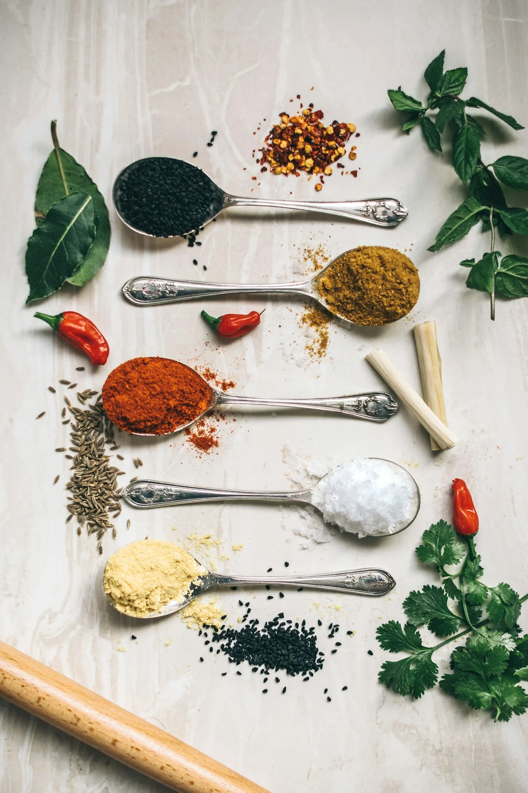

Guia de temperos de cada região do Brasil
Tucupi, jambu, dendê, pequi, queijo minas e erva-mate: conheça os temperos e ingredientes que dão identidade às cozinhas de cada região do Brasil.

Cada região do Brasil tem um punhado de ingredientes que funcionam quase como assinatura — usá-los certo é a diferença entre uma receita genérica e uma que realmente lembra o lugar de origem.
Norte: tucupi e jambu
O tucupi, caldo extraído da mandioca-brava depois de fermentado e cozido, dá acidez e um sabor único a pratos como o tacacá. O jambu, por sua vez, provoca uma leve sensação de formigamento na boca — parte da experiência, não um defeito.
Nordeste: dendê e pequi (dividido com o Centro-Oeste)
O azeite de dendê, de cor alaranjada e sabor marcante, é a base de frituras como o acarajé. Já o pequi, mais associado ao Centro-Oeste, também aparece em receitas nordestinas do sertão — sempre com o aviso de nunca mastigar o caroço.
Sudeste: pimenta biquinho e queijo minas
Menos picante e mais aromática, a pimenta biquinho aparece em conservas e pratos mineiros. O queijo minas curado, usado no pão de queijo, funciona quase como um tempero por si só — sal e acidez em uma única textura.
Sul: erva-mate e louro
Além do chimarrão, a erva-mate aparece em pratos assados. O louro é uma constante em receitas de cozimento lento, como o barreado, perfumando a carne durante as várias horas de preparo.
Conteúdo informativo, revisado pela equipe editorial do Clube da Receita. Prazos e temperaturas são referências gerais; siga sempre as orientações do rótulo e, em caso de dúvida sobre segurança dos alimentos, descarte.
← Voltar ao caderno